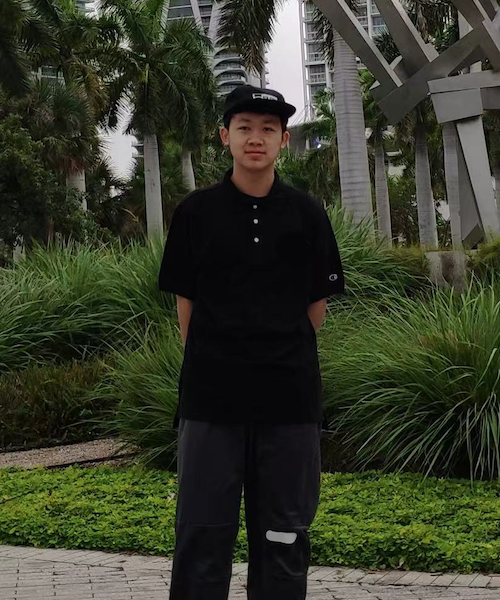
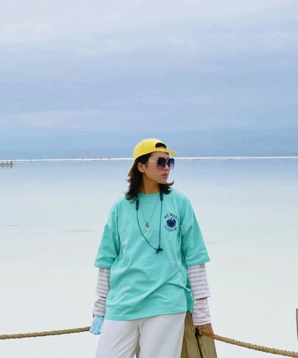
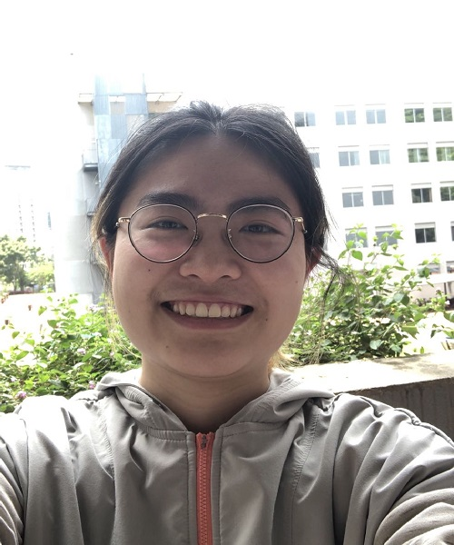
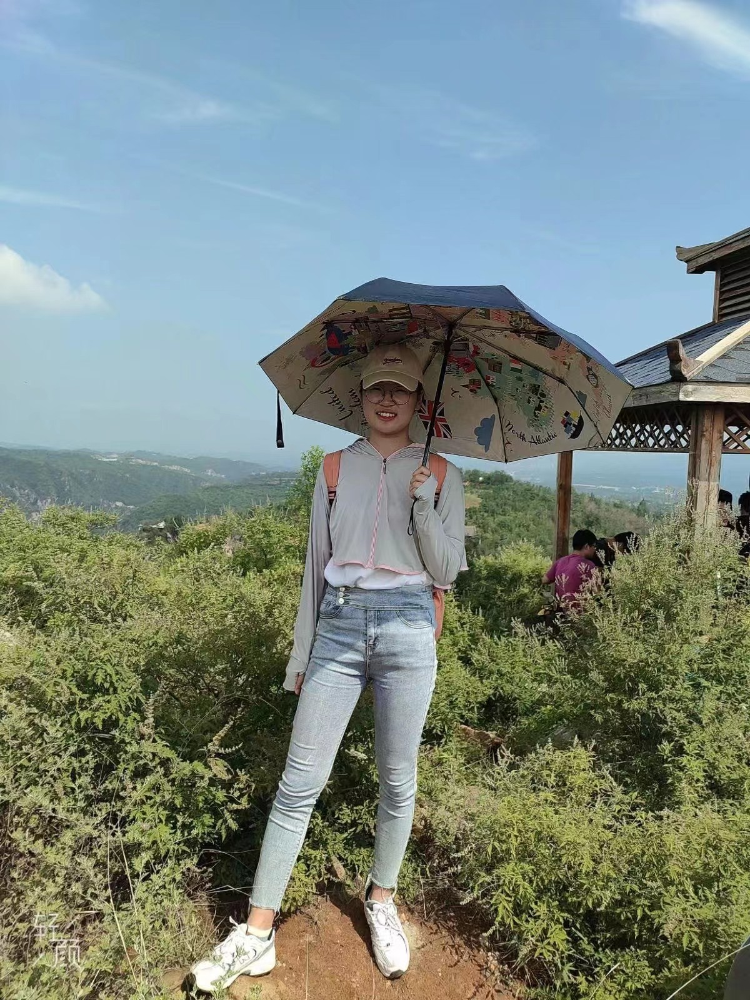
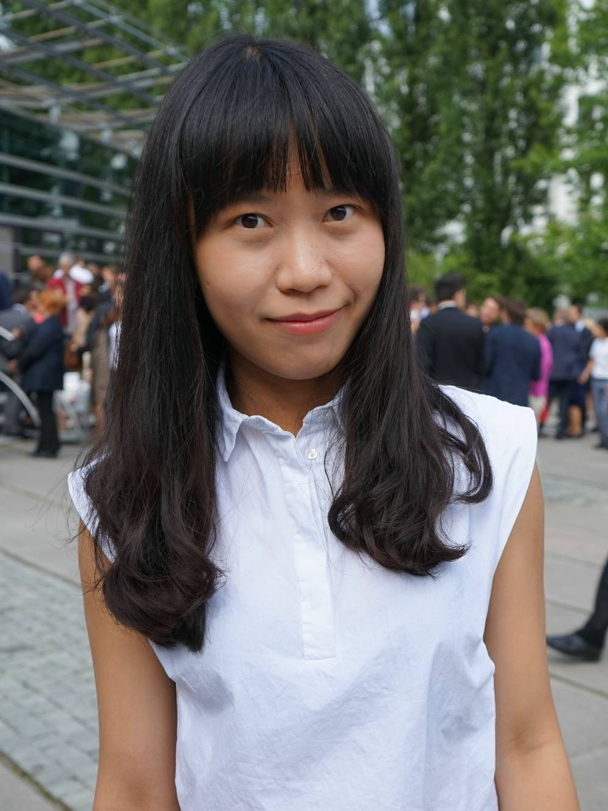
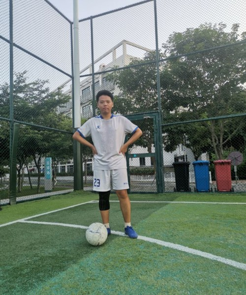
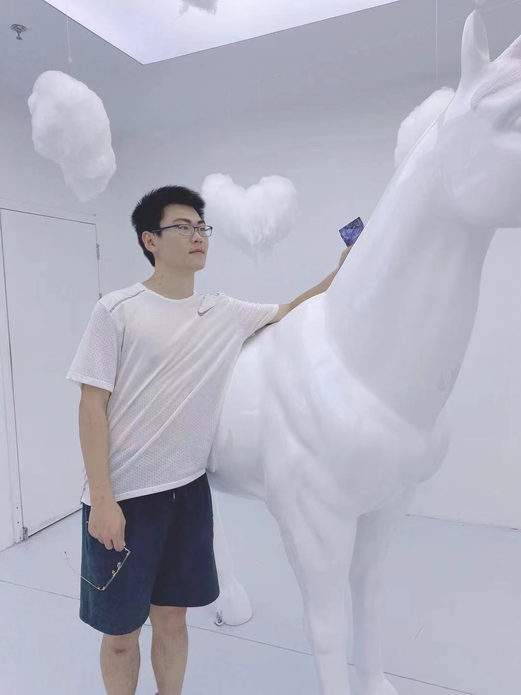
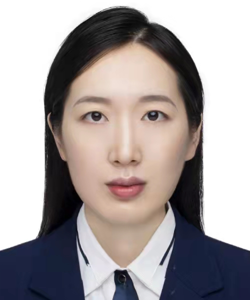

PhD Student (2020.07–)
Email: chenyy2020@mail.sustech.edu.cn
2016–2020, BS, SUSTech

Master Student (2022.07–)
Email: 12232237@mail.sustech.edu.cn
2018-2022, BS, China University of Geosciences
2019-2020, Visiting student, Missouri S&T

PhD Student (2021.07–)
Email: 12149018@mail.sustech.edu.cn
2019-2021, MS, Chinese Research Academy of Environmental Sciences (Joint Program)
2018-2021, MS, Xi’an University of Science and Technology
2014-2018, BS, Xi’an University of Science and Technology

PhD Student (2022.07–)
Email: 12231101@mail.sustech.edu.cn
2016–2020, BS, SUSTech
2020-2022, MS, SUSTech

Master Student (2023.07–)
Email: 2837133703@qq.com
2019-2023, BS, North China University of Water Resources and Electric Power

Postdoc (2021.05–)
Email: lius7@sustech.edu.cn
2015-2019, PhD, Technical University of Munich
2012-2014, MS, Technical University of Munich
2011-2014, MS, Wuhan University
2007-2011, BE, Wuhan University
PhD Student (2020.07–)
Email: 12049029@mail.sustech.edu.cn
2017–2020, MS, Jilin University
2018–2020, MS, Chinese Academy of Sciences (Joint Program)
2013–2017, BS, Jilin University

Master Student (2021.01–)
Email: 12032337@mail.sustech.edu.cn
2016-2020, BS, Shaanxi University of Science & Technology

Master Student (2023.07–)
Email: zp18100451996@163.com
2019-2023, BS, North China Electric Power University

Group Secretary (2022.06–)
Email: zhaohr3@mail.sustech.edu.cn
2017-2020, MS, China Three Gorges University
2014-2016, BS, Anyang Institute of Technology
Master Student (2021.08–)
Email: 12132243@mail.sustech.edu.cn
2017-2021, BS, South China Normal University
See Openings for more information
Bin Bai 白彬, Research Assistant (2020–2021), Now: PhD student, Georgia Institute of Technology, USA.
Lei Shu 束蕾, Postdoc (2020–2022), Now: Associate professor, Fujian Normal University, China.
Wenfu Sun 孙文夫, Research Assistant (2020–2021), Now: PhD student, The Royal Belgian Institute for Space Aeronomy (BIRA-IASB), Belgium.
Liqian Tan 谭力乾, Undergraduate Research Assistant (2020–2021), Now: China Merchants Bank, China.
Dakang Wang 王大康, Postdoc (2020–2022), Now: Associate professor, Guangzhou University, China.
Xin Zhang 张馨, Research Assistant (2021–2022), Now: Research Assistant, SUSTech, China.